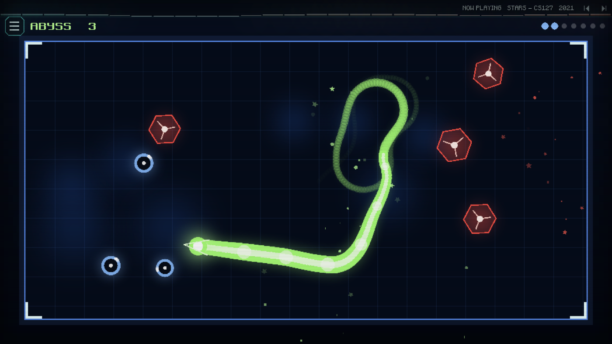
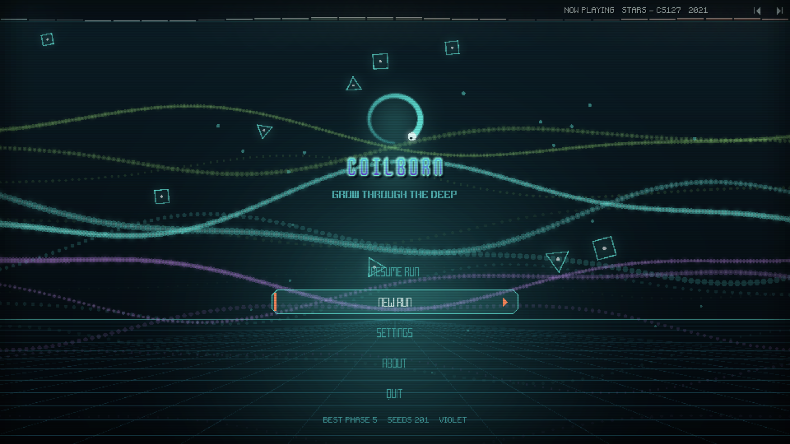
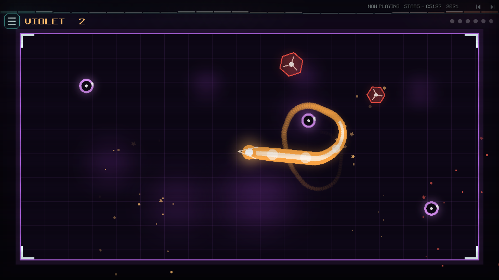
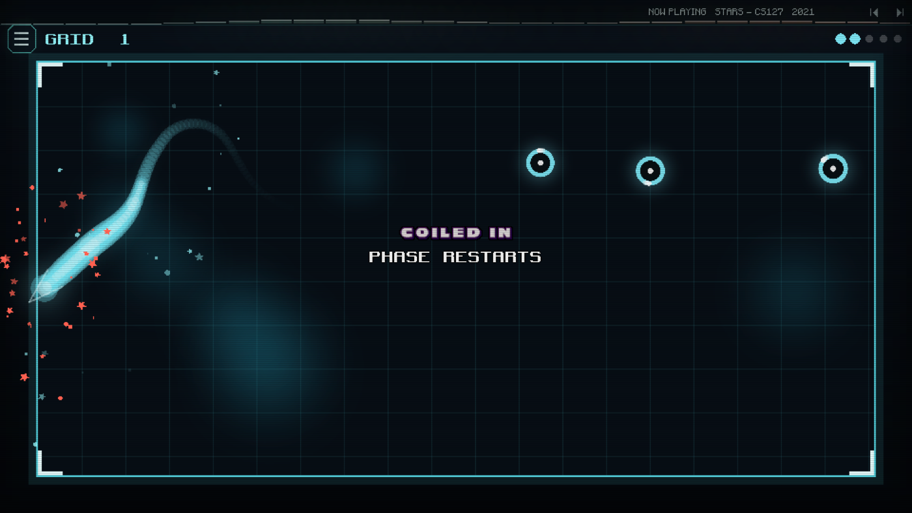
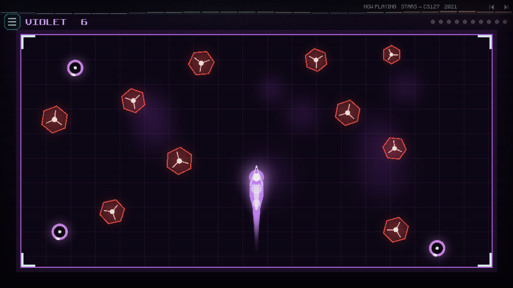
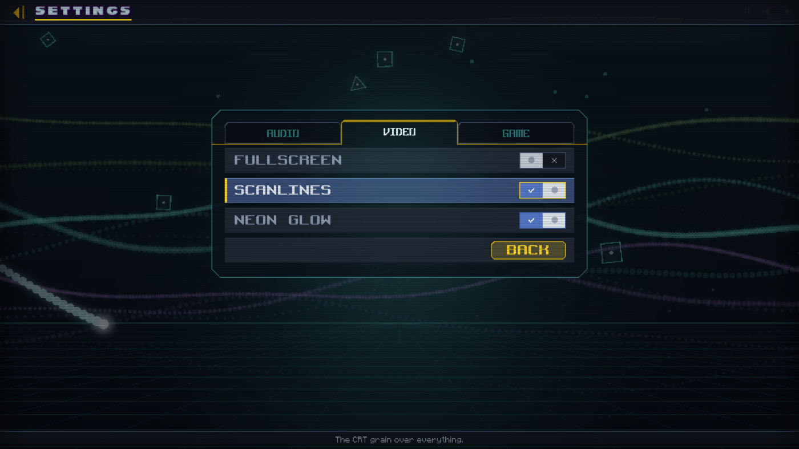

No grid of cells and no squares. Your trail glides, and you steer it: hold anywhere and it turns towards your finger, or use the arrow keys. Absorb the identity discs, keep clear of the firewall nodes, and never cross your own light.






A short game you can pick up with one hand, and one control to learn.
Hold anywhere and the head turns towards your finger. Arrow keys on a keyboard. Nothing else to learn.
Each sector is a lit rectangle with a grid floor. Clear it and the next one opens: faster, more crowded, in a different colour.
Cyan from the start; Orange, Lime and Violet as you get further. Each changes the colour of your light, not the rules.
Never your progress. Best sector, discs absorbed and unlocked programs are kept between runs.
Three things to know, and you are playing.
Hold anywhere on the screen, or use the arrow keys. The trail never stops: you only choose where it goes.
Identity discs make you longer. The note rises with every disc you take in a sector.
Firewall nodes kill on contact, and so does your own trail. The phosphor you leave behind is only light.
Everything a parent usually has to check for, already answered.
Buy once on the App Store and it works on iPhone, iPad and Mac. Desktop and Android builds are on the way.
Not yet. Coilborn is still in development; this page is here so you can see what it is. It will go on sale on the App Store first, with desktop and Android to follow.
The idea is: eat, grow, do not bite yourself. The feel is not. There are no cells and no steps — the trail glides and turns as smoothly as you steer it.
A sector takes a minute or two. You can leave after any of them: your best sector is kept.
Every sector is faster and has more firewall nodes, and your own trail gets longer, which is what really ends runs.
Almost nothing. The sector name and the disc counter, and both are optional to look at.
Coilborn is not on sale yet. When it is, you buy it once and it is yours on iPhone, iPad and Mac: no ads, no in-app purchases, no accounts and no network — the game never talks to anything.
Get Coilborn